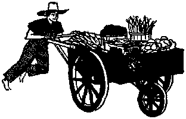

How to tame it is worth knowing!
Ten* pest over artificial fluorides in the drinking water
' ' ' ■ ■■■■*■■—
The world’s most popular beverage
An unreliable philosopher
MARCH 22, 1956 semimonthly
THE MISSION OF THIS JOURNAL
News sources that are able to keep you awake to the vital issues of our times must be unfettered by censorship and selfish Interests. “Awake!” has no fetters. It recognizes facts, faces facts, is free to publish facts. It is not bound by political ambitions or obligations; it is unhampered by advertisers whose toes must not be trodden on; it is unprejudiced by traditional creeds. This journal keeps Itself free that it may speak freely to you. But it does not abuse its freedom. It maintains integrity to truth.
“Awake 1” uses the regular news channels, but is not dependent on them. Its own correspondents are on all continents, in scores of nations. From the four corners of the earth their uncensored, on-the* scenes reports cogie to you through these columns. This journal’s viewpoint is not narrow, but is international. It is read in many nations, in many languages, by persons of all ages. Through its pages many fields of knowledge pass in review—government, commerce, religion, history, geography, science, social conditions, natural wonders—why, its coverage is as broad as the earth and as high as the heavens,
“Awake I” pledges itself to righteous principles, to exposing hidden foes and subtle dangers, to championing freedom for all, to comforting mourners and strengthening those disheartened by the failures of a delinquent world, reflecting sure hope for the establishment of a righteous New World.
Get acquainted with “Awakel” Keep awake by reading “Awake!”
Published Semimonthly Bt WATCHTOWER BIBLE AND TRACT SOCIETY, INC.
11T Adams Street Brooklyn 1, N. Y., TJ. 8, A.
N. H. Knobe, Prerident Grant Suitib, Secretary
Printing this issue: 1,575,000
Luing** In which thli magizln* Is piblbhed; Semimonthly—Afrikuns, English, Finnish, French, Oertnan, Holtandhb, ItaUiin, Japanese, Norwian, Spanish, Swedish.
Monthly—Danl&h, Greek, Pcriugurae, Ukrainian.
Offices Yearly eub^riptian rate
Amirta, U.S., 1H Adams St , Brooklyn 1, N.Y. $1 Aitfttlla, 11 Beretford KU Strathfleld, N.8.W. S/-Canada, 4D Irwin Ave., Toronto 5. Ontario $1 England, 34 Craten Terrace, London, W. 2 7/-
Kew Zealand, O.P.Q. Box 30, Wellington, C. 1 7/-SMth Afrln, Private Bag, Etandsfonleia, Tri,
Five cents a copy
Remittance) should be sent to office in your cmm-try tn compliance with regulations to guarantee safe delivery of money. Remittances are accepted at Brooklyn from countries where no office is ligated, by international money order only. Subscription rates in different countries are. here stated in local rurrenty. Nolle* of expiration (with renewal blank) ts sent at least two Issue) before subscription expires. Chanpl gf address when sent to our office may be expected effective within une month. Send your old as well as new address.
Entered as second-class matter at. Brooklyn, 5.Y., Act of March 3, 1B70. Printed In U.S.A.
CONTENTS
Ignorance Accepted, as the Norm
Do You Use Your Tongue to Hurt
Pythagoras, an Unreliable Philosopher
Commandments for the Machine Age
“Your Word Is Truth”
Pythagoreanism and
Gilead School Graduates 26th Class
A*"OT only is it a right to in* fl
1N vestigate religion, but it is
also a duty, a divine command.
True religion never forbids or discourages the right use of reason or the clear understanding of doctrine. If it did discourage reason, then God would not have issued the invitation: “Come now, and let us reason together.” And the apostle would not have warned the Corinthians: “Keep testing whether you are in the faith, keep proving what you yourselves are.” —Isaiah 1:18; 2 Corinthians 13:5, New World Trans.
The wrong thinking about God that exists today can be laid right at the feet of the original rebel, Satan the Devil. Thus we are told: “The god of this system of things has blinded the minds of the unbelievers, that the illumination of the glorious good news about the Christ, who ;s the image of God, might not shine through." —2 Corinthians 4:4, New World Trans.
There is conflict and confusion in the religious doctrines taught today. What docs your religion say? More important, what do the Scriptures say? Few people today really have compared their religion with the Bible. Many believe in purgatory, never knowing that that word does not even appear in the Bible, and that Jesus and his apostles did not teach it. Many believe that
' those who are not good
jZ will bum forever in hell, never
knowing that the Bible says: “The dead know not any thing.” Many believe that Jesus and his heavenly Father are part of a coequal trinity, never knowing that Jesus (who most certainly should have known!) said: “My Father is greater than I.” Yes, there is much that is taught in today’s religion that is not in harmony with the Bible!—Ecclesiastes 9:5; John 14:28.
How can wrong religious thinking be corrected? Paul pointed to the source of such correction: “All Scripture is inspired of God and beneficial for teaching, for reproving. for setting things straight, for disciplining in righteousness, that the man of God may be fully competent, completely equipped for every good work.”—2 Timothy' 3:16,17, New World Trans.
What did Jesus really teach? What should you believe? What course is proper? What is right? These are vital questions. There is but one sure place to find the answer—in God’s Word, the Holy Bible. Will you allow your own ideas to be disciplined by what it says? Will you allow yourself to be taught, reproved, set straight by it, becoming equipped for good work through changing your own ideas to conform with God’s?
Christ “became responsible for everlasting salvation to all those obeying him.” Note: "To all those obeying him.” It is impossible to obey him without knowing what his instructions are. It is impossible to believe his doctrines without knowing what he taught. And you will find it most difficult to follow his path in a religion that, though it may claim his name, teaches doctrines that contradict what he said. Now, when today’s many churches contradict one another, some of them must be contradicting him.—Hebrews 5:9, New World Trans.
Investigate your religion, Examine its teachings in the light of the Bible. And as Paul admonished the Romans: “Quit being fashioned after this system of things, but be transformed by making your mind over, that you may prove to yourselves the good and acceptable and complete will of God.” —Romans 12:2, New World Trans.
Ignorance accepted ai the norm
Back in 1935 Dr. Donald A. Laird, one of America’s noted psychologists, wrote in the Review of Reviews (Vol. 92:44} the following: “The country’s average level of general ability sinks lower with each generation.”
. In 1955 there were increasing reasons to believe that general ability was still sinking. One of those reasons came in the form of a new book named “Retreat from Learning.” Written by ex-high school teacher Joan Dunn, it tells why she quit teaching forever. It tells how all too often the teacher found her students with no desire to learn. Students would use their wit thinking up ways to avoid learning, as at vocabulary drills when one of them might remark: 'So who cares? I say a word like that and all my friends laugh at me. Nobody knows what that word means.’ Almost every class had Us sullen and defiant pupils who would yawn, lounge, drum, stamp and wander about at will. Whether they worked or not, they knew that the law would keep them in school.
Ex-teacher Dunn paints a bleak picture of modern educational theories and of a topheavy bureaucracy, riddled with chattering experts and with teachers deprived of authority and afraid to differ. For discipline the educationists have substituted student whim. “This new methodology,” says author Dunn, “has raised a breed of child afraid of no one, awed by no rule or regulation. ... School.. . has become [these children’s] toy, and they cannot understand a teacher's refusal to let them play with it.”
Of the continual sinking of general ability, ex-teacher Dunn writes: "The prevailing idea regarding texts is that if one is too difficult, get an easier, more ‘modem’ one. . . . The print gets larger, the pictures more numerous, and I fear that the next and final development will be the substitution of pictures for words. Language faces a similar dissolution. . . . And the niceties of thought will disappear with the words to express them and the books in which others have expressed them before. Unfortunately, many educators today are delighted with such developments, for they feel they are getting ‘to the people’ at last. It is rather the people who are getting al them, with the results that are to be expected. . . . The educational level sinks to the lowest common denominator, and, ironically, no one benefits, not even the most ignorant, for he finds his ignorance accepted as the norm.”
" 'Tunepite* oft 'Tomavtovt"
There are watches that do almost everything. Some tell the day of the week, the date and the phase of the moon; others serve as stop watches and alarm clocks. Recently a watch with a new kind of extra benefit appeared; this one was displayed at the National Jewelry Fair at Chicago. Styled as a watch for the future—a rather grim one—this “timepiece of tomorrow” has a dial that measures the amount of radioactivity in the atmosphere.
died tongae? How to tame ft In an ■astable world is worth taowiaf.
By ITSELF the tongue is a harmless little organ. But when let run loose in the mouth it can be as devastating as a stray spark in a giant forest or as deadly as a poisonous serpent’s bite.
The tongue is not all bad, however. It is a very useful organ. But it aU depends on how we use it. If we use the tongue to praise God, laud his purposes, magnify his wondrous works and name, then it can be a tremendous blessing to us as well as to our fellow man. But if we use it to gossip, lie or backbite, it then becomes a vicious tool of death and destruction. Right use of the tongue brings health and life to us and our hearers; wrong use, hurt and death. God’s Word says: “My son, attend to my words; incline thine ear unto my sayings. For they are life unto those that find them, and health to all their flesh.” For “death and life are in the power of the tongue: and they that love It shall eat the fruit thereof.”—Proverbs 4:20, 22; 18:21.
Right use of the tongue means to have it under control, so that we heal with it and do not hurt. This is more easily said than done, because the tongue is about the most stubborn, rebellious, unco-operative organ there is. In fact, the disciple James says: “If anyone does not stumble in word, this one is a perfect man.” And men have tamed all manner of birds, beasts, serpents and creatures of the sea, “but the tongue, not one of mankind can get it tamed. An unruly injurious thing, it is full of death-dealing poison.” So lacking is tongue control that the whole world stands condemned before God for its misuse.—James 3:2, 5-16, New World Trans.
The tongue is the window to the heart and mind. It reveals the moral and spiritual health of a person, nation or world. As Jesus so aptly stated: “Either you people make the tree fine t and its fruit fine or make the tree rotten and its fruit rotten; for by its fruit the tree is known. Offspring of vipers, how can you speak good things, when you are wicked? for out of the abundance of the heart the mouth speaks. The good man out of his good treasure sends out good things, whereas the wicked man out of his wicked treasure sends out wicked things. I tell you that every unprofitable saying that men speak, they will render an account concerning it on Judgment Day; for by your words you will be vindicated, and by your words you will be condemned.” —Matthew 12:33-37, New World Trans.
Outwardly, a man or nation might appear physically sound and heatthy, but inwardly or spiritually it may be wholly rotten, having no sound spiritual fiber whatsoever. For example, Israel, when faithful, was likened to a sound body. But when her people became corrupt, she was called a harlot: “How is the faithful city become a harlot! she that was full of justice! righteousness lodged in her, but now murderers. Thy silver is become dross, thy wine mixed with water. Thy princes are rebellious, and companions of thieves; every one loveth bribes, and followeth after rewards: they judge not the fatherless, inelther doth the cause of the widow come unto them.” For the nation to recover from this degenerate spiritual condition, God commanded that it wash itself, make itself clean, put awa^ evil doing; “cease to do evil; learn to do well; seek justice, relieve the oppressed, judge the fatherless, plead for the widow." But Israel was in no mood for a moral or spiritual recovery. It hired prophets and priests that would wink at its corruption. Her people commanded these lying hirelings to “speak unto us smooth things, prophesy deceits." They were not unduly concerned about hearing truth. And those who dared speak truth were ridiculed; some, imprisoned; others, killed. Israel’s lying and deceitful tongues led to the hurt of millions and to the ultimate destruction of the nation itself.—Isaiah 1:5-24; 30:10, M Stan, Ver.
Christendom, today, is in the same rotten condition. Like her prototype, Israel, she appears outwardly beautiful to men, but inside she is “full of dead men’s bones and of every kind of uncleanness.” She, according to the Revelator, has become “a dwelling-place of demons and a lurking-place of every unclean exhalation and a lurking-place of every unclean and hated bird!” Look at her crime record, her avalanche of adultery and fornication, her corruption calendar, her wars, her religious and political division. Look at her murders, rapes and robberies. Check her heart for truth and righteousness. Weigh her past and present in the light of God’s Word of truth. Then decide whether she is Christlike or a haven ‘for demons and every kind of unclean and hated bird.’ Do not wait for her clergy, priests and prophets to speak out against her corruptions, for they are hirelings, hand-picked specially to tell lies and deceits, to speak smooth things to her in order not to shock her false religious susceptibilities. Their tongues are empty of truth or healing power. Virtually hundreds of millions are being misled by these false guides. “Blind guides is what they are. If, then, a blind man guides a blind man, both will fall into a pit.” Wrong use of the tongue is leading Christendom to her doom at Armageddon; right use will still save a great crowd from her impending disaster.—Matthew 23:27; Revelation 18:2; Matthew 15:14, New World Trans.
Christendom, however, is not alone guilty. The whole world is in the same spiritual predicament. Christendom, though, is more reprehensible, because of her hypocritical claims to Christianity. Nevertheless, Paul says: “ ‘There is not a righteous man, not even one; there is not a one that understands, there is not a one that seeks for God. All men have deflected, all of them together have become worthless; there is not a one that does good, there is not so much as one.’ ‘Their throat is an opened grave, they have used deceit with their tongues.’ ‘Poison of asps is behind their lips.’ ‘And their mouth is full of cursing and bitter expression.’ ‘Their feet are speedy to shed blood.’ ‘Ruin and calamity are in their ways, and they have not known the way of peace.’ ‘There is no fear of God before their eyes.’’’—Romans 3:10-18, New World Trans.
Using the Tongue to Heal
While there is no cure-all for the present corrupt system of things, there is a cure, however, for those who are conscious of their spiritual needs. The cure is the same as that offered to the nation of Israel: ‘Wash yourself, make yourself clean inwardly,’ that is, morally and spiritually; "cease to do evil; learn to do well; seek justice, relieve the oppressed, judge the fatherless, plead for the widow.” (Isaiah 1:16,17,AS) Jesus showed how this could be done. He stated that it was not the physical food that went into a man that defiled him, but “the things proceeding out of the mouth come out of the heart, and those things defile a man. For example, out of the heart come wicked reasonings, murders, adulteries, fornications, thieveries, false testimonies, blasphemies. These are the things defiling a man; but to take a meal with unwashed hands does not defile a man.”—Matthew 15:18-20, New World Trans.
The washing of the heart clean of these impurities is done by putting good, clean thoughts into the heart, by filling it with an active knowledge cf God’s pure Word of truth, the Bible. By preaching God’s Word to the crowds who were spiritually sick, Jesus was able to heal them of their spiritual infirmities. He made them spiritually sound. He also performed physical cures, but these were few when compared with those he healed spiritually. He knew that physical cures may prolong a life for a few years, but spiritual cures open up the way for everlasting life. Therefore, spiritual healing is by far the more vital. All physical disabilities will be remedied during the thousand years of Christ’s kingdom reign.—John 6:63, New World Trans.
In sending forth his disciples to the ends of the earth he commissioned them to do the same work of healing as he did, by ministering God’s Word of truth. Clean Bible truths washed away old paganistic ideas. This caused a great transformation in the lives of new converts, so great that they were called new creatures. After their conversion they thought differently, lived and conducted themselves differently. A diligent effort was put forth on their part to meet the high requirements of Christianity. Paul speaks of this great change in his letter to the Ephesians, saying:
“You no longer go on walking just as the nations also walk In the unprofitableness of their minds, while they are in darkness mentally, and alienated from the life that belongs to God, because of the ignorance that is in them, because of the insensibility of their hearts. Having come to be past all moral sense, they gave themselves over to loose conduct to work uncleanness of every kind with greediness. But you did not learn the Christ to be so, provided, indeed, that you heard him and were taught by means of him, just as truth is In Jesus, that you should put away the old personality which conforms to your former course of conduct and which is being corrupted according to his deceptive desires; but that you should be made new in the force actuating your mind, and should put on the new personality which was created according to God's will in true righteousness and loving-kindness. Wherefore, now that you have put away falsehood, speak truth each one of you with his neighbor, because we are members belonging to one another. Be angry, and yet do not sin; let the sun not set with you in a provoked state, neither allow place for the Devil, Let the stealer steal no more, but rather let him do hard work, doing with his hands what is good work, tfiat he may have something to distribute to someone in need. Let a rotten saying not proceed out, of your mouth, but whatever saying is good for building up as the need may be, that it may impart what is favorable to the hearers. . . . Let all malicious bitterness and anger and wrath and screaming and abusive speech be taken away from you along with all injuriousness. But become kind to one another, tenderly compassionate, freely forgiving one another just as God also by Christ freely forgave you.”—Ephesians 4:17-32, New World Trans,
The truth of Christ applied in th^ir lives made of them a different people. They were not like the many millions of Christendom whom Dr. Robert J. McCracken recently found reason to chide in his sermon at the Riverside church in New York city. He charged that a “large proportion” of Christianity was Christian in name only. These nominal Christians, he said, are “ignorant of what Christianity stands for in some cases, apathetic and indifferent in many more, not making anything like the difference they ought to make, not lifting the level of personal and public behavior, their religion a religion at secondhand.” He defined secondhand religion $s “an attachment to Christianity that is traditional and conventional and at the moment fashionable, a matter of good form, not a life commitment.”
“Not long ago,” Dr. McCracken declared, “an issue of a popular magazine stated that many a church was more a social center than a shrine and that many ministers are sociologists and psychologists rather than evangelists. To what type of faith does that point? The fact is that Christians, clergy and laity alike, are not very different from other people. For many their church is an appendix tp their politics. Nor is there any getting away from the fact that a great number of social evils are tolerated solely because Christians haven’t as yet felt the weight and horror of them on their conscience.” And there is no evidence that this will take place this side of Armageddon. ■—New York Times, May 16,1955.
One thing is sure, early Christianity was totally different from what we now see in Christendom. True Christianity cannot be identified in her present traditional systems. Rather, it can be seen in the dynamic, wholesome, clean organization of the New World society. Within its expanding walls Christian truth and principles are made alive and great crowds are coming in to be spiritually healed. The good news of God’s established kingdom binds up the brokenhearted; his truth makes free those who have for years been bound to falsehoods and traditions. It comforts mourners. Those who have been chained to such false doctrines as a fiery hell, purgatory, an end of the planet earth, are greatly relieved mentally to find that such doctrines find no basis in God’s Word of truth. They are spiritually uplifted to learn that God will resurrect the dead in the memorial tombs, that his kingdom will restore humanity to perfect health and life in his new world and that they, through proper use of the tongue, can become a part of that
- new world.
Christians must use their tongues to preach these truths. They cannot ignore the spiritually sick crowds, since they have a healing message. If they withhold healthful words and let those seeking a cure die at Armageddon, they will be held responsible for such deaths. God holds them accountable. Christians must use their tongues wisely, not sparingly, and with all their powers engage in the spiritual work of healing.
They must apply these truths in their lives by putting away all lying, gossiping and backbiting. Obscene thoughts must cease from their heart. The heart is to be filled with clean thoughts, so that from the heart’s abundance the mouth can freely speak. The Christian tongue is to be used for the one high and lofty purpose of directing people to the New World society, so that there they can learn to praise God with their tongues, thereby gaining for themselves and those that listen to them everlasting life.
CoEFEE drinkers may find it hard to be
lieve; but of all popular stimulating beverages, probably the world’s favorite, considering the number of people who drink it, is tea. Of course, many a coffee lover also likes his tea, thus adding to the vast number of tea drinkers. But whether one drinks tea or coffee or neither of them it is still interesting to know something about the world’s favorite drink and to know, above all, what adventure there is in a teacup.
The word “tea” comes from a dialectal Chinese word fe. Obviously, tea had its start in China. Yet tea seems to have been native also to the hill lands and mountains of northern Siam, upper Indochina and eastern Burma, where it can still be found growing wild. But the Chinese learned about tea early. They learned that by brewing the withered, dried leaves of the .mature plant, they produced a beverage that had stimulating properties. First mentioned in Chinese literature about 350 A.D., tea spread rapidly through China and Japan under the guidance of the Buddhist priests who were trying to combat intemperance. By the eighth century the use of tea had become so popular that a long series of taxes was imposed on it.
Taxes on tea drinking eventually hit Europeans, but first the popularity of tea had to spread to that continent. Oddly enough, it was not until late in the six-.eenth century that Europeans, particularly the Dutch, became familiar with “the cup that cheers.” The British, later to become
ly "AwohP correspondent in IndoflMfo
some of the most ardent tea drinkers in the world, did not begin to use the beverage until almost a century later. It is said that the English paid as much as $30 to $50 for a pound of the new stimulant when it was first introduced. So it was used only on special occasions and even then only by the richest people.
But tea was too cheerful a beverage to remain with just the rich. For the first time, in 1657, tea was sold publicly in Garraway’s famous London coffee shop. Soon all of London’s 2,000 coffee shops were offering the beverage. Taxes came next. The first tea tax of eight pence a gallon on all tea sold was introduced shortly thereafter by King Charles II. His queen introduced tea to Court. And soon the chemists or drugstores ceased being the sole distributors of tea; now the grocery stores had a new item, a fast-selling one at that.
In America tea had its devotees at an early date. When Britain passed a law whereby duty was imposed on tea, the American colonists refused to pay the tea tax. To show their resentment, the pioneers staged the famous Boston Tea Party. In 1773 three British ships were anchored in Boston Harbor
with 342 chests of tea on board. A group of Bostonians, disguised as Indians, boarded the vessels and dumped the cargo of tea into the harbor. Resounding cheers rang from more than 1,000 watchers on the wharf as £18,000 worth of tea ebbed out to sea.
Tea in the Raw
Today tea is grown in many countries of the world, some of the most important producers being China, Japan, Formosa, India, Russia, Java, Sumatra, Ceylon and East Africa. China is the world's biggest producer, producing about 50 percent of all tea. But with 582,000,000 people, China drinks up almost all the tea it produces.
What is tea in the raw? It is a leaf that comes from an evergreen shrub. The bush looks somewhat like a myrtle and blossoms like'a wild rose. If the shrub is allowed to grow wild it may attain to the height of thirty feet and become a small tree. But then it would be difficult' for workers to pick the leaves. So the cultivated plant is not allowed to grow much higher than three feet. Even though a tea bush may be fifty years old, it is still a strong producer and will keep on growing good quality tea for many years to come.
The plucking of the leaf, in Java and in many other places, is done entirely by women and girls. The pickers carry big baskets or bags hanging from their head or shoulders. Only young leaves are picked. The pickers must learn to become expert, and to be able to single out the tender young shoots and deftly break them off at just the right spot. In Java the growing season lasts all year round; there are about thirty pickings a year. In colder climates, such as those of China and Japan, only three to five pickings are possible.
A pound package of tea may seem insignificant, but look what it contains! Some 3,200 tea leaves! Over 2,000 possible blends show what variety there can be in a teacup. There are three main classes of tea: (1) Black, produced mainly in Ceylon, India and Java; (2) green, produced mainly in China and Japan, and (3) oolong, which usually comes from Formosa.
Tea Brought to Market
In Java each estate has its own factory for processing the wet leaf. First, the leaf is examined to eliminate stalks, course leaf and foreign matter. Then the leaves are spread thinly on a series of racks and left to wither. This usually requires less than a day. The withered leaf is now ready for the next step: the rolling machines. Here the leaves are crushed and twisted between a roller resembling an old-fashioned grinding mill. This process not only curls the leaves but breaks up the leaf cells without breaking the leaf, so liberating the juices.
The next big step to make black tea is fermentation. The leaves are spread out and left to ferment or oxidize for about two hours. The air acts upon them and changes their color to a coppery brown. The quality of taste depends greatly on the time allowed for fermentation. If the leaf is left too long, the flavor of the tea is impaired. When fermentation is completed, the next step is friting or drying. Machines resembling large ovens dry the leaf in about half an hour. When it comes out its moisture content has been reduced to about 3 percent. The tea now is ready for the teapot, though only twenty-four hours have passed since the leaves were alive and growing. After tea mellows, however, its flavor improves.
What about green tea? In green tea the leaf is steamed right after picking to seal it and prevent the sap from fermenting. So the big difference between green tea and black tea is that green tea is not fermented. It is merely dried, crushed and packed. It is a common belief, but a false one, that black and green teas are obtained from two distinct varieties of plant. On the contrary, the difference depends upon the processing methods just explained, and the two kinds—black and green—are obtained from the leaves of bushes that are indistinguishable. Oolong tea, the third type, is a semifermented tea. This makes oolong tea, well liked in America, intermediate in characteristics between black and green tea.
The Quality of Teas
What makes quality in tea? The grade of tea is determined by the age of the leaves, the smallest and youngest leaf making the finest tea. Black tea is sorted into several grades. “Orange pekoe” is the product of the smallest and youngest tea leaves and so is the finest of all. The nextsize leaf yields what is known as “pekoe.” Pick up a package of fine black tea and you will see on it the word “pekoe.” This is Chinese for “white hair” and is an apt name, because the leaves that are picked young still have “down” on them. The third-size leaf yields “pekoe souchong”; the fourth “souchong.” Souchong means “little plant" or “small sort,” and this tea is made up of leaves below the pekoe. The fifth and largest leaf is called “congou,” meaning “labor.” The name comes from the fact that originally in China it consisted of leaves of the third picking, and much labor was required for its production. Most commercial black teas found on the market today are blends of these various grades.
Oolong, a kind of black tea with the flavor of green tea, comes from a Chinese word meaning “black dragon.” And green tea, which also has its grades, Is so named because the rapid drying of the fresh leaves prevents the chlorophyll from changing.
The British today are the greatest tea drinkers of the Western world. Yearly consumption per capita is about eleven pounds, to compare with less than one pound in America. Tea drinkers find the beverage refreshing and stimulating. These qualities come from the caffein that tea contains. It also contains a small amount of tannin. The criterion for excellence in making tea, it appears, is the amount of caffein it has in relation to the amount of tannin. The aim seems to be to achieve a tea high in caffein but low in tannin. It is suggested that the best method of making black tea is to pour boiling water on the leaves and allow it to stand for one and’ a half minutes after the infusion, and then pour off the beverage. In this way all the best-flavor oils are obtained from the leaf with a minimum of tannin. So flavor really does not improve if tea is left standing, say for five minutes, after infusion. There is increased bite in the taste then, and this is due to the increased amount of tannin.
And so there is indeed a story in a teacup. Probably more than one half of the world’s population drink tea, and yet how few realize what that little tea leaf has been through! It has lived on a plain or a mountainside, perhaps in Java, Ceylon, India or Japan. It has been picked, crushed, fermented, baked, perhaps even perfumed, sorted, packed, shipped and blended. Though we think little of a tiny leaf floating in a teacup, yet that little leaf has indeed had a world of adventure.
J[ Dentist s Pet Peevej
C. A dentist in London has served notice on his women patients; they had better take notice if they want their teeth fixed. This dentist has posted a sign on his office door. It reads: “Lipstick—I will not attend to any women with lipstick on their lips. I am tired of getting it on my fingers and instruments. Before I attend you, go home and scrub it off.”
By “Awake!" correipcndent In Indonesia
DADIES quickly respond to things that are beautiful, and so do men, for that matter. But men do not appear to have that indefinable, indescribable, uncontrollable something that their female counterpart seems to possess when it comes to seeing and sensing and raving about things beautiful.
ft They are especially appreciative of the work Of Indonesian craftsmen, who become so ingenious at their trade as woodcarvers, engravers of silver and delicate work of brass, in basket-and-mat-weaving skills that are fabulous in detail, in hand weaving of material and the making of batik cloth that their extraordinary labors defy description in terms of beauty and workmanship. Indonesian women themselves are especially capable in this art—the making of batik cloth. Perhaps this is because, like their sisters the world over, they delight in being beautifully dressed.
ft Batik is a term applied to wax painting. It is an ancient art, as evidenced by the batik designs on the clothing carved on old stone figures. Today such .cloth is used for sarongs. A sarong is described as being a length of cloth, bound tightly from the waist, worn as a type of anklelength skirt by both men and women. A slendang is a long shawl, which, when knotted over the left shoulder, forms a sling in which the baby or shopping is carried. An ifccrt fcepaia is cloth modeled into a turban-type hat for men. Finally there is the kemban, a cloth bound tightly around the chest and worn only on festive occasions.
ft In this age of the machine, it is still a marvel to see the hand skill, patience and natural artistic genius of the Javanese batik producers. They labor beside their little thatched cottages with their primitive implements, which consist of an earthenware bowl, several little copper cups having various forms and from one to six spouts, a stick padded with cotton cloth, a wooden hammer, an upright frame having the appearance of a clotheshorse, a large log of wood and several dishes for washing, and cotton or silk cloth. There you have the primitive, and still “modern” batik factory.
ft The cloth is prepared by several washings in hot water containing a weak soda solution or ashes of burned rice stalks. After drying it is steeped in oil, hemmed, starched in a solution of rice water, then redried. It is then loosely rolled, placed on a log of wood and gently pounded with a wooden hammer until soft and pliable, after which it is placed over the frame, and is now ready for painting.
ft The artist may sketch in her design with charcoal, but more often than not she does not need this aid, as her natural artistic genius requires no such direction. Using the little copper cups, she carefully pours the wax onto the cloth in intricate designs. For fine parallel lines the many-spouted cups are used, and for large areas the padded stick. While care must be taken, speed also is an essential, as the wax is liable to harden during the process. Complete hardening is obtained by dipping the cloth in cold water. Now the cloth Is protected by wax on both the back and the front and the parts left open are ready for dyeing. When the first dye is dry the wax is removed by dipping in hot water. Again it is dried, then rewaxed over color, then dipped in the second color dye, dried and so repeated till the pattern comes up in various colors and designs achieved by the repeated waxing and dyeing.
ft The original dyes no doubt were vegetable. Today, however, many chemical dyes are used, increasing the range of colors greatly. The designs are of varied geometrical patterns, plants, flowers, clouds, rocks, birds, etc. They have been handed down from mother to daughter for centuries.
ft This delightfully designed cloth has added distinction to the royal courts of Java. It has enriched its makers, added homeyness to the humble cottages and charm to its wearers. It has left a lasting impression of how graceful and attractively, attired are our Javanese sisters in their beautiful batik sarones.
FLUORIDATION jAAue
the "Study of the that appeared in February, 1955, fluoridation in
44TT IS ridiculous J, to ask people to vote on a scientific question of which they have little knowledge!”- exclaimed Dr. Daniel F. Lynch at a press conference held in Vancouver, B.C. Who is this Dr. Lynch and what was the scientific question he was referring to? Dr. Lynch is a Washington, D.C., physician and one of America's leading proponents of fluoridating water to reduce dental caries, tooth decay, in children. He had been urging fluoridation for the city of Vancouver, and its mayor had suggested that the question be settled at the polls.
Why should Dr, Lynch get excited at the suggestion of the mayor that the people should be allowed to vote on the question? After all, a campaign of education could precede the vote, so that the people could intelligently express their wishes in the matter. Could it be that Dr. Lynch does r.ot have much faith in the democratic procedure of letting people vote on a question? Could it be that Dr. Lynch remembers that in the November, 1954, elections nine of the eleven cities that voted on fluoridation turned it down, and that records show that thus far the issue has been defeated in 105 out of 190 cities where it was taken to the polls?
Why should the majority of cities voting cn fluoridation reject it when it has the support of practically all the medical and
dental societies in the United States? Could it be that there is something wrong with the way this program is being handled? That this may be at least partly to blame is indicated from
Anti-Scientific Attitude” the Scientific American, relative tn the defeat of Northampton, Massacnu-setts. After analyzing the various motives and the high emotional content of the campaign, the writer sums up by advising those conducting such campaigns in the future: "In our attempt to overcome anti-intellectual feelings we can try to avoid the errors of relying on prestige, or name-calling and of failing to reach the people before the issues become polarized.”
Why did the advocates of fluoridation depend so much upon prestige and name-calling? Could it be that they were not too sure of their position, that they were unable to answer all the arguments raised against fluoridation? With no ax to grind, Awake! herewith presents some of the arguments concerning the fluoridation issue.
Fluorides are usually found in a natural state where there has been volcanic activity, as in Arizona, New Mexico and parts of Texas. The fluoride found in food and drinking water is calcium fluoride, that which is used in the fluoridation program is sodium fluoride, a byproduct of aluminum smelting. Calcium fluoride is found in various foods from as little as one fifth of one part per million to as much as one hundred parts per million (p.p.m.), as in Oriental teas. Its food value has not as yet been determined.
In fluoridation, sodium fluoride is added at the rate of one part per million, which increases the average person's intake about 200 percent. Among the most common uses of it are those for the manufacture of rat poison and for hardening concrete. It might be said that the fluoridation issue centers itself around these two basic uses: those favoring it stressing its hardening qualities in protecting the teeth of the young; and those opposing it pointing to its highly poisonous character, termed “toxicity,” and the cumulative harmful effect it might have upon weak kidneys, etc.
Arguing for Fluoridation
In a comprehensive article in favor of fluoridation published in The Scientific Monthly, October, 1954, Dr. J. H. Shaw, professor of dentistry at Harvard’s School of Dental Medicine, presented graphs, statistics and arguments, which he summed up in five main points. First of all, fluorides are present in all food, so much so that Up to the present time no tests have been made to determine their value by giving animals a diet witirely void of fluorides, which should be done to determine just What food value they have.
As to its value in reducing tooth decay he showed that where the water naturally had 1.8 p.p.rn. fluorides, as in Galesburg, Illinois, children averaged two decayed, missing or filled teeth, whereas in places where the water was free from fluorides, as in Waukegan, Illinois, the children averaged twice as many. In a number of cities where fluoridation was adopted, after six to eight years of fluoridation there has been & drop of 30 to 70 percent in the number of teeth DMF (decayed, missing or filled).
And regarding the toxicity of fluorides in water, extensive surveys were made in two Texas communities, where the one had 8 p.p.m. fluorides in the water and the other had water practically free of fluorides. X rays of the skeletal systems and case histories were taken and there appeared to be “no significant difference in any phase of health between individuals in the one community and the other with two exceptions”; the fluoride community showed a number of people with mottled teeth and the other community had slightly more heart disease.
Continuing with his fourth argument Dr. Shaw showed that the fluorides can be accurately added to water by means of carefully designed machinery and that instruments can determine the amount of fluorides present in water before and after it has been treated. And, finally, he pointed out that there is no other method known at present that is so effective and simple as adding the fluorides to the drinking water; meticulous applications of concentrated solutions tb the external teeth of young children, in a period of four to six weeks, have been found effective but require being repeated every three years.
Also arguing in favor of fluoridation are the results of the experiment made in New York state, where two cities of similar size and location, Newburgh and Kingston, were used for comparison. After a ten-year check a test showed that the children of Newburgh had from 41 to 58 percent less tooth decay, depending upon age, than those of Kingston.
Antifluoridationlsts publish New York State Department of Education figures, which seem to show more tooth decay in Newburgh than in Kingston, in spite of fluoridation. However, had these antifluori-dationists checked further they would have learned that this seeming discrepancy was only because of the fact that the Kingston checks were made by physicians as part of their regular medical checkup. Such checks show the dental situation to be much more favorable than it actually is, as they do not discover all decayed, missing or filled teeth as do those made by dental hygienists, who did the checking for Newburgh’s schools.
Arguments Against Fluoridation
A reading of literature published by those who oppose fluoridation certainly
gives weight to the opinion made by one scientific writer that it is a manifestation of the fear psychosis of the times we are living in. However, there are some arguments that do appear to have weight and that answer the five propositions made by Dr, Shaw. In the first place it is pointed out that the fluorides that appear naturally are calcium fluoride, whereas that being used artificially is sodium fluoride. The former is nonsoluble and alkaline reacting, whereas the latter is soluble and acid reacting, both of which distinctions could have a vital effect on the body’s enzymes and kidneys.
As for fluoridation’s being perfectly safe, it is very apparent that not all scientists are agreed on this point. Thus Dr. C. M. McCay of Cornell University, one of the leading nutritionists In the United States, says; “But if one knows the long history of the toxicity of fluoride, he begins to have some doubts of this panacea. Furthermore, if one has given some attention to this problem and its history on a worldwide basis he knows that such nations as Switzerland have had scientific boards discuss this matter for some time, but not a city or a nation such as Switzerland has yet put fluoride in its water supply.”
Giving similar testimony is Dr. Nesin, director of laboratories for the city of New York: “It would be most hazardous to assume that fluoride is physiologically inert except for its action upon the teeth,” and “The situation is complicated further by unknowns related to the varying susceptibilities of individuals." Also Dr. Leo Spira, in his letter to the New York Times, stated, among other things, that the fluoridation “program has recently been summarily rejected in both France and Sweden, and that practically all the communities In Great Britain refused to have anything to do with it.”—New York Times, April 23, May 25, 1955.
Pertinent also is the testimony of the United States government bulletin on the subject, to the effect that “other studies suggest that it may not be safe for infants and other children suffering from malnutrition to drink fluoridated water." And Dr. W. J. McCormick, writing in the Archives of Pediatrics, April, 1953, points to the scientific evidence that fluorine interferes with the body’s assimilation of fat and carbohydrates, greatly increases the time required for blood to clot, has been known to cause sterility in animals and does harm to the body’s bone structure and nervous system.
As for being able to introduce the chemical as uniformly as in nature, that is ignoring the imperfection of machinery and the human element. At times the chemical may cake because of humidity and there is always the question of a community’s being able to afford to put an able technician in charge of the project. If this were not so it would not be necessary to caution that a “sample should be analyzed periodically in a state laboratory to determine how carefully the fluorides are being introduced," as Dr, Shaw does.
And then there is the matter of the amount of water being drunk. The fact that 1.2 p.p.m. is considered safe in northern United States but a maximum of 1 p.p.m. for the South would seem to indicate that under certain conditions even a healthy person may be harmed by the toxic effects of fluoride in the water.
Other Objections
There is also the matter of alternatives. Says Dr. H. V. Smith of the University of Arizona: “Better and safer control of caries may be obtained by proper diet or by topical application of fluorine to the teeth.” And says the A.M.A. Journal, Volume 154, under the heading Dental Caries: "With the large amount of publicity given
to the relationship of fluorine in drinking water and the prevention of caries, the much more important relationship of diet and caries is apt to be overlooked. A recent report in Australia ... serves as a reminder that the real solution of the problem of preventing dental caries is dietetic.”
Another valid objection is that fluoridation regiments the people, forcing medication on people whether they want it or not. Some may not want the teeth of their children to become mettled the way fluorine sometimes affects them. Some have religious scruples against any kind of medication. What about their convictions’ being respected? We hear of objections to “captive audiences,” but what about making all people “captive patients”?
But what if the water is fluoridated? Those most likely to be harmed by it, the aged, those with weak kidneys, pregnant women and undernourished children, can play safe by drinking distilled water. And, on the basis of the French scientist Carnot’s discovery some sixty years ago that bone meal rids water of excess fluorine, it can be added to one's diet, a supplement, incidentally, which has much to recommend it from many standpoints. And finally, there is the matter of making certain that one obtains sufficient vitamin C in one’s food, as sodium fluoride has a tendency to rob the body of its calcium.—Archives of Pediatrics, April, 1953.
For most persons, however, there seems to be no point in getting disturbed about fluoridation. It is very likely that the majority of those who do become overly concerned harm themselves far more by using tobacco, by indulging too freely in alcoholic beverages or by overeating than they could possibly be harmed from the addition of one part per million of sodium fluoride to their drinking water.
A Reasoned Appraisal of Fluoridation
In the United States government bulletin No- 2500, entitled “Fluoridation of Public Drinking Water,” appears a reasoned appraisal of the controversial question “To fluorinate or not to fluorinate?” Among other things it states: “It can be said that a number of scientists are opposed to the program at this time. In substance, their position is that there are too many unanswered questions concerning the safety of this procedure to permit recommendations to be made that would result in the consumption of fluoridated water by millions of people every day of their lives. . . . These scientists maintain that when a highly toxic substance such as fluorine is recommended into the nation’s communal water supplies, so that every person, regardless of his age, state of health, or possible personal reactions to fluorine is required to drink it, affirmative evidence beyond a reasonable doubt should be presented that no one will be injured. . . . The situation is not so serious today that risks should be taken with the health of even a small number of persons, at least until we know with some certainty what types of persons may be adversely affected and to what extent.... The committee believes that if communities are to make a mistake in reaching a decision on whether to fluoridate their public drinking water, it is preferable to err on the side of caq-tion.”
Study on the Survival of the Species
•gf A biology professor at North Texas State College recently reported that a survey of Texas and Oklahoma lakes by students reveals fishermen catch more female fish than male fish. The significance? The professor, Dr. J. K. G. Siley, said it is that more female fish are born and grow to hook. It is not, he added, as some boy students have been vigorously maintaining, that the male fish is just smart enouah to keep his mouth shut.
Farming on Eleuthera
O YOU who are used to working land that is measured by the hundreds of acres, farming on euthera certainly would be different And if you find it a tedious task even to walk around your land because of its size, then farming on Eleuthera indeed would be unique! Perhaps you consider implements such as disks, plows and tractors to be almost as necessary as the land itself. Well, by the native Eleutheran these 'gadgets' of modern farming are not even considered. Not only that, but the Eleutheran does not even live on the land he farms!
To understand the cultivation of the land on this most oceanward of the Bahama Islands, you must understand a little of this island’s history. In appreciation for the services of men from Eleuthera who captured Nassau from the Spanish, England’s Queen Victoria granted large sections of land to the settlements from which the men had come. This land, however, was not town property, but was to be used for farming. It is called "commonage,” that is, land owned by the community. The town of Rock Sound, for example, has a population of about nine hundred people and approximately 14,000 acres of such land. This is as large a town as there is on the island.
If you are a native of one of the settlements to which this grant was made, it is not necessary to buy your land. All that is required is that you pick a section of land that is not already being used, and start to work. You cannot freely go and farm the land of another town, though if you marry a native of a town that has commonage you are also free to work their land. It is, therefore, understandable why the people of the more than twenty such communities on
|y "Awok*r* In tha Mmm>
this island do stick together. However, an outsider can buy land and exchange it for commonage land, if the town so allows.
How much land do the people here work? Those whose time is taken mainly in some other employment sometimes have just a single acre, or even less. If farming is a man’s sole occupation, then he will probably have five or six acres at a time. A whole family might work fifteen to thirty acres. On this they will raise pigeon peas, beans, sweet potatoes, com, tomatoes, cabbage and onions. Also, the land may be lightly sprinkled with pawpaw or perhaps banana trees. When citrus fruits or banana trees are planted in orchards, then more ground is required, and a farm of this type would be a little larger.
No One Lives on the Farms
As you go down the main road, someone might mention that there is a farm down that path. "Good,” you say, “let's see who lives there.” But try as you will you will not find any houses on the farms. Rather, the people live in town and walk sometimes five miles to their land. During the harvest season they may bring the produce back into town in a large straw bag balanced on their heads. Or a few people may group together and use a truck.
But farmhouses are not the only thing that is scarce here. Another thing that is missing, if you can imagine it, is earthworms, In sections of the island there are absolutely no earthworms! There is, however, another type of worm that burrows through the ground. But instead of aiding production, this ground worm of many colors and with a hard shell cuts the plants* life line so that the plants die.
When viewing qp Eleutheran farm for the first time you might even find it difficult to appreciate the fact that what you are looking at actually is a farm. What is different about the farming here? Well, here the fields are not cleared as they are in other places. The small trees are merely cut down to a height of about four feet. Naturally it does not take long for them to sprout again. And the produce is grown in between these gangling tree stumps and the abundance of coral. Coral, did we say? Yes, it may be that the coral is what accounts for both the lack of earthworms and of plows. Both the earthworm and the plow might be more adapted to this area if there were more earth and less coral.
Another unusual thing about farming here is that in, say, January you would find tomatoes, waving com stalks and plentiful peas and beans spattered here and there in the patches of earth among the white coral. But come back in June or July and the colors are entirely different. At this season everything seems black. What, vegetation is black? Oh, it is not the vegetation that is black, but it is the ground that is black because everything purposely has been burned. A local inhabitant, though farmers elsewhere might want to argue with him, will say: “It’s the only way to get anything but weeds to grow,”
The method of planting, too, seems odd to the visitor. A ‘planting stick’ is used. Looking like the twin brother of a gentleman’s walking stick, it is used to put holes in the ground and make room for the seeds. Here, too, the local farmers’ greatest helper is the machette, locally known as a cutlass. This resembles a heavy, overgrown sword, and it is used for clearing the land and sometimes in place df the planting stick. Yes, all the work here is done by human labor. There are no machines. And yet these people grow an abundance of fruits and vegetables. There are both sweet and sour orange groves, grapefruits, limes, and especially refreshing on a hot day is the flavor of a local plant-ripened pineapple just freshly picked for eating!
Without doubt farming is the principal Eleutheran occupation. But in addition to the common farms there are two much larger ones owned by business enterprises. These have generally superior land and equipment, and thus production is stepped up. A major operation on one of these is dairy farming, and this farm is the only place on the island where cows are to be seen. These, indeed, are cows of the field. They would not know what to do with a bam if they saw one, and they never have seen one on this island.
Only a few of the sheep, goats, pigs and chickens on Eleuthera are kept in some sort of pen. The majority enjoy the wide-open expanse of country and community life, and are just looking for adventure. Thus it is advisable to keep your doors shut, unless you do not mind if they enter and help themselves to whatever they please!
Working the Salt Ponds
One remaining oddity here is not very common today, but there is at least one remaining settlement that still works its salt pond. Other such ponds have filled in because of lack of use. Except at both ends of the island little Eleuthera is at the very
maximum two miles In width. At one place it is so narrow that a moderate sea washes right across it Yet nature has found sufficient room for “moray ponds?’ The name is derived from their occupants, the moray eels. These large ponds are not the ones from which the salt is obtained, but after a heavy rain the moray ponds overflow into much smaller salt ponds. Thus the salty moray pond water, a|ter entering the smaller pond, begins to evaporate. The surface of the salt pond is then scraped with a sea growth that is similar to fine wire screening, and off comes the salt. More salt will then be deposited, making possible a further ’’harvesting” of this useful product.
Yes, though the customs are different, when we pause to consider the matter we are impressed with the marvelous provision Jehovah has made for the feeding of his creatures. Even on this small Island of Eleuthera enough can be produced to look after the needs of the inhabitants, and indeed much extra too. The student of God’s Word is reminded that God has promised earth will again yield its full increase when, in God’s new world, mankind again will use his God-given sense in caring for the earth, and neither greed nor destruction will mar its productiveness.
Would you be interested in living in such peaceful conditions as God’s Word says are soon coining to the earth? Then examine what God has said about it. Study his written Word and conform your life to its instructions. Appreciate the provisions that the Creator has made for man, and take advantage of everlasting life in the perfect, peaceful, harmonious new world now at hand!
THE EXISTENCE OF GOD
Amazing as it may seem to many people, the Scriptures make no effort to prove the existence of God. It is obvious that God exists; so the Bible merely says: ‘In the beginning God created the heaven and the earth?’ (Genesis l.bl) A modem twentieth-century error is to raise the question of whether God exists. The error in Bible times consisted of worshiping many gods. The Bible takes the middle and correct view that there is only one God, but that he must be worshiped.
McClintock and Strong’s CycIopcEdia puts it this way: 'Tn the Scriptures no attempt is made to yrrotse the existence of a God. The error of men consisted not in denying a God, but in admitting too many; and one great object of the Bible is io demonstrate that there Is but one. . . . The proof rests on facts recorded in the history of the Jews, from which it appears that they were always victorious and prosperous so long as they served the only living and true God, Jehovah (the name by which the Almighty made himself known to them), and uniformly unsuccessful when they revolted from him to serve other gods. What argument could be so effectual to convince them that there was no god in all the earth but the God of Israel? The sovereignty and universal providence of the Lord Jehovah are proved by predictions delivered by the Jewish prophets, pointing out the fata of nations and empires, specifying distinctly the rise, the duration of their power, and the causes of their decline; thus demonstrating that one God ruled among the nations, and made them the unconscious instruments of promoting the purposes of his will, . , , The [Scripture] writers, generally speaking, do not reason, but exhort and remonstrate; they do not attempt to fetter the judgment by the subtleties of argument, but to rouse the feelings by an appeal to palpable facts. This is exactly what might have been expected from teachers acting under a divine commission, and armed with undeniable facts to enforce their admonitions.”—Volume 3, page 905.
The *"Bible ^Describes Spring
'5’ To discern the approach of spring all of one’s senses must be alerted. For such a person spring’s Producer works daily marvels. These marvels can be seen, heard and even perceived in the air. The Bible's description of spring, though far from lengthy, provides appeal to all our springdetecting senses: “See, the winter is past, the rain is over and gone; the flowers have appeared on the earth, the time of song has come; and the call of the turtle dove is heard in our land; the fig tree is putting forth its figs, and the blossoming grapevines give forth fragrance.”—Song of Solomon 2:11-13, An Amer. Trane.
eMarvel of a
Spring is the time when tender buds look timidly out and begin to unfold their hoarded wealth of crumbled leaves. Almost all that a tree can express in beauty springs from those precious little “growing points” or undeveloped shoots called buds. Formed with wondrous completeness during "the previous summer, buds live right through winter wrapped up pro
tectively in tough, weatherproof bud scales. The buds’ spiral arrangement makes It possible for so many leaves to be economically packaged away in such a tiny space. But What triggers a bud to unfurl in spring? A thermometer reading of at least 45 degrees Fahrenheit. There is something else too: the ascent of food-bringing sap.
cfthe ^Wonder of ^limbing S&P
The rise of sap is one of the most wonderful signs of spring. Truly amazing is the sap's powerful pressure. By inserting a tube into the young wood of a tree like a maple, it is possible to show that sap rises with strong pressure. This pressure has often been measured. In one laboratory experiment, scientists found that even the lowly tomato plant can produce pressures ranging up to about 100 pounds to the square inch—enough to carry sap to the topmost twig of a California sequoia. Marvel that it is, sap is not some mysterious plant potion; it is only water and dissolved mineral salts. And yet how many varieties there are of sap—as many as there are kinds of trees! Oak sap will hot nourish a birch tree nor will beech sap a maple tree. Taste the unique flavor of maple syrup, and you will be glad that sap yields variety.
of Spring Song
The mockingbird never sounds like an imitation, though imitation is its business. Unrivaled as a mimic in America, the mockingbird is never satisfied with a one-song vocabulary. So it borrows generously from its bird neighbors. So perfect are the imitations that their falsity would hardly be suspected even by bird students were it not that the medley is mingled with calls belonging to the repertoire of the gifted songster itself. Nor is the mockingbird satisfied with mimicking just bird sounds; any animal will do if it can make some noise. The chirping of a cricket, the barking of a dog, the meowing of a cat, the croaking of a frog, the plaints of young chickens—these the mockingbird reproduces with ease. To find out how vocally versatile the mockingbird is, the American naturalist Edward
Forbush studied one over a period of time. He found that it could imitate, besides a variety of nonbird sounds, at least thirty-nine bird songs and fifty bird calls!
BOME twenty-five centuries ago a Greek youth traveled abroad in search of wisdom and knowledge. To the question of a certain king as to what his profession was he replied that he was but a “philosopher,” a lover of wisdom, for wisdom resided only with the Deity. (Greek: phileln, “to love,” and sophia, “wisdom”) Thus this Greek, one Pythagoras, is credited with originating the name by which “wise” men before and since his time are now known.
Seemingly Pythagoras was very modest, yet history also records that he claimed supernatural powers and to have descended from the gods. His philosophy, which included mathematics and astronomy, as was customary in his time, was a strange combination of sound scientific principles and fantastic mysticism. He was a trail blazer both as regards true science and false religion, leaving his mark for the better in the fields of science and for the worse in the field of religion. Of him McClintock & Strong’s Cyclopaedia states: “It is certain that none of the elder philosophers of Greece attained higher eminence in speculation, impressed himself more forcibly on the contemporary world, or influenced more widely and permanently the character of subsequent investigation.” Truly Pythagoras was a paradox.
The details of his life and of his opinns that have come down to us are so con. sed that it is impossible to give a wholly ^accurate picture of them. The date of his rth is said to be as early as 608 and as late as 570 B.C. Several birthplaces are mentioned, with Samos, an island off the Greek coast, being most frequently given. There is also some question as to his father’s name and occupation, as well as several conflicting stories as to the nature of his death: that he died violently at the hands of a mob, that he died of old age, and that he died from starvation. However, it is certain that he was married and had several sons and daughters, who became his disciples.
In his quest for knowledge and wisdom Pythagoras reputedly left his native Samos and visited Egypt, where he was taken captive by the Persian armies under Cam-byses and so came in touch with the Magi of Persia and Babylon, who were astrologers. Whether Pythagoras obtained his ideas regarding the immortality of the soul and metempsychosis from Pherecydes, from these Magi or from his contact with Hinduism is not clear.
Upon his return to Samos Pythagoras opened a school for the benefit of his townsmen, but finding they had little interest in the knowledge he had accumulated by his travels he resumed traveling. Upon his second return he had but little more success, for we read of his going to Crotona, in southern Italy, before long.
The Pythagorean Sect
At Crotona Pythagoras found the right soil for his teachings, and soon he had formed some three hundred or more men into a community that was at once an academy of philosophy, a religious sect, a monastic order, a secret society and a political party. Its members recognized the word of Pythagoras as the end of all dispute and it is said that beginners had to learn in silence the first five years. No one was allowed to publish abroad what he had been taught, Pythagorean knowledge being considered esoteric information, for a select few. These Pythagoreans, as they were called, made their bid to the aristocratic element and were strongly opposed by the democratic elements of Crotona. Regarding their sect the historian tells us that it “prospered mightily and presently the whole of lower Italy and Sicily was covered with branches of the order.”
The Pythagoreans practiced a severe form of asceticism, and because of their teaching of metempsychosis they were vegetarians. While nearly all historians tell of their banning beans, the Catholic En~ cyclopedia points to research that seems to indicate that this was a metaphor and meant that Pythagoreans were not to mix in politics (white and black beans being used In those times for voting), because their venture in politics turned out so disastrously in Crotona, as we shall see. The Pythagoreans wore distinctive garb and had certain passwords by which they could recognize one another.
The Pythagoreans were lovers of mysteries, hero worshipers and also miraclemongers. They readily believed Pythagoras’ claims to have descended from Phoebus, one of their gods, and his claims to have supernatural knowledge and powers. Concerning these we read: “To the earlier years of his residence at Crotona may be assigned [the myths regarding] his death, burial and resurrection, and his report of wonders in the nether world; to the same time may be referred his [claim to] familiar discourse with animals, his handling of snakes with impunity, his predictions of earthquakes, his control over tempests, his removal of pestilences, etc.” It is because of such claims that certain of his followers in the second century after Christ, when there was a resurgence of Pythagoreanism, held that he rivaled Jesus Christ.
Pythagoras lashed out against suicide, which was very common in ancient Greece and Italy, because “man is the property of God,” and therefore man was not free to do as he pleased with himself. He also held that the “highest blessedness of man is likeness to the Deity,” and that prayer should not1 be offered for specific things since man does not know what is best for him. While he also spoke much about truth and justice, it is difficult to harmonize this with his own claims to divine origin and supernatural powers, unless he really deceived himself. It appears that the general effect of his teachings was constructive as regards morals, for he stressed simplicity and modesty in dress, decorous conduct, moderation in food and drink, and healthful recreations for mind and body in the form of music and gymnastics.
However, with his philosophy of life, it must be said, went a pride of learning and a contempt for the poor and unlearned. Also his philosophy fostered an arbitrary use of power, the wanting to play the role of a paternal government, the Pythagoreans being determined to force other people to benefit from their superior wisdom and morality in such things as vegetarianism. For some time they were successful, but then able spokesmen among the democratic element succeeded in causing a revolution in which the meeting place of the Pythagoreans was stormed, burned to the ground, and many of the Pythagoreans slain, the rest fleeing. It appears that Pythagoras survived this disaster.
iifusic, Astronomy and Geometry
Says The Encyclopaedia Britannica: “Pythagoras’ greatest discovery was, perhaps,
that of the dependence of the musical intervals on certain arithmetical ratios of lengths of string of the same tension.” And says another authority: “Pythagoras made the astounding discovery that the harmonic intervals of the seven-stringed lyre can be reduced to simple rational proportions.”
As regards astronomy Pythagoras was also a pioneer. He viewed the earth as one of the planets, conceived it to be round and turning on its axis once every twenty-four hours. However, he also thought that the earth, together with other planets, made a circuit around an invisible fire, for which the earth also required twenty-four hours. He therefore clearly anticipated the heliocentric (h&ios, Greek for “sun”) theory of planets revolving around the sun. How far ahead of others he was is apparent from the fact that centuries later Aristotle discarded his ideas as worthless and Ptolemy, some five centuries after Pythagoras, expounded the geocentric (g£, Greek, “earth")" theory, which the “wise” men of the world blindly held until Copernicus, some 2,000 years after Pythagoras, discovered the truth by giving consideration to the theory of Pythagoras.
In the matter of mathematics Pythagoras also showed himself a paradox, mixing science with mysticism. Until his time mathematics served only for commerce, but he also gave it scientific importance, the development of mathematics in early Greece being largely his work. Especially noteworthy were his knowledge and understanding of the principles of geometry, although it cannot be dogmatically stated to what extent he himself made such discoveries or merely brought to Greece and Italy the knowledge had by Egyptians and others. He demonstrated that the sum of the three angles of any triangle was always equal to two right angles and that in any triangle the square of the hypotenuse (the long line) is equal to the sum of the squares of the other two sides. According to one authority his geometry "covered the bulk of the subjects of Euclid’s books i., 11., iv., vi., (and probably Hi,) with the qualification that the Pythagorean theory of proportion was inadequate” in certain respects
But not content with sound mathemat leal principles such as’ these, Pythagoras the mystic also evolved certain fantastic ideas about numbers. Not only was everything in the universe numerable, but numbers were facts, principles, ideas in themselves. In fact, numbers were everything.
Soul Immortality and Metempsychosis
In music, astronomy and geometry Pythagoras remarkably approximated the triith if not pinpointing it, but when it came to religion he came wide of the mark, for he became the symbol of two of the great errors foisted upon mankind, that of soul immortality and metempsychosis, that is, the transmigration of souls after death into other humans or into the lower animals. Says Webster: “To Pythagoras are ascribed the doctrine of metempsychosis and the teaching that earthly life is only a purification of the soul.” We also find a trace of the evolution theory in Pythagoras'teaching, for, according to The Encyclopaedia Britannica: “Pythagoras’ teaching on this point is connected with the primitive belief in the kinship of men and beasts; a view which Pythagoras also held.”
He taught that man had a soul that was immortal and without material substance, and he held out for it a nirvana-like destiny, Until that goal was reached, he believed, its life was renewed in human or animal creatures according to what one deserved. This explains why his followers were vegetarians and regarded a butcher as a murderer. While there is some doubt as to his being altogether a vegetarian, the
story is told of his having begged a man to leave off beating a dog because in its cry he recognized the voice of a deceased friend.
The 99 Percent
T THE meeting of foreign ministers at . Geneva in November, 1955, Molotov boast
ed that the East Germans must like their government, since Premier Otto Grotewell had received 99 percent of the votes of the entire electorate. When Macmillan, the British foreign secretary, countered with the observation that on the basis of his own experience anyone that could do that was no mere man but a “walking miracle,” Molotov scowled and squirmed.
How was it possible for the Communist puppet regime to perform this "miracle” and claim a 99 percent vote in its favor in East Germany? First of all, a caucus of the Communist and other leading parties was held that divided the various seats among them, and their candidates were the only ones whose names appeared on the ballot. To drop a ballot In the box, regardless of how marked, was taken to mean a vote for this list of candidates.
The election was held on Sunday and by noon the loyal and fearful had been accounted for. Then Communist agents called on the ones who failed to vote and if the one agent failed a committee called that offered to take the reluctant voter to the polls by auto. If the
Truly Pythagoras was a strange and often unreliable philosopher, combining the scientist with the mystic, the idealist with the charlatan,
Pole 'Miracle*
voter was sick an ambulance was offered, and if he was bedridden, a ballot box was brought to his bedside.
Workers of the various manufacturing plants and occupants of large apartment houses were organized so that they marched together to the polling place behind banners identifying them. School children were required to write letters to their parents urging them to vote for the Communist regime out of gratitude for all the government had done for them! Those on relief or getting old-age pensions were threatened with a reduction in their assistance unless they voted and at times a recalcitrant nonvoter was beaten.
While the Communists may boast of a 99 percent vote in their favor in East Germany, their action in refusing to allow free elections there on the unification of Germany reveals the hypocrisy and meaninglessness of this 99 percent vote. These facts expose not only the hypocrisy of the Communists, but also the hypocrisy of the many East Germans who allowed the fear of man to cause them to go on record as favoring a regime that they know is not only wicked but against their own best interests.
COMMANDMENTS FOR THE MACHINE AGE
“The machine has become a god—and the assembly line its prophet.” These recent words of Rabbi Dudley Weinberg of Congregation Emanu-El B'ne Jeshurun, Milwaukee, Wisconsin, were the introduction to a new set of commandments. The new commandments were listed as: “Thou shalt be efficient, for I the Lord, the machine god, am efficient, Thou shalt produce. Thou shalt multiply gadgets and fill the earth with them. Thou shalt not waste thy time in the irrelevancies of culture, of art or of humaneness, for these things will tempt thee to depart from the assembly line and leave it idle and forlorn. Thou shalt sell. Above all thou shalt sell. Thou shalt sell what people need and thou shalt sell what people do not need. Thou shalt make no distinction. What people do not need thou shalt make them want by the sacred ministry of advertising. Thou shalt even make war, or at least make the threat of war, seeing that war increaseth the market for everything, even for guns and tanks and planes and bombs. For a thousand years of peace in my sight are as nothing compared to one good day at the office, and a whole era of brotherly love is foolishness compared to a double entry bookkeeping system that showeth a fine profit and much capital gains.”—The Milwaukee Journal, September 26, 1955.
IS
Pythagoreanism and Roman Catholicism
Pythagoras, one of the first philosophers or “lovers of wisdom" of ancient Greece, was a pioneer in several distinct fields. Particularly in the fields of musie, geometry and astronomy was he far ahead of his times and a trail blazer. But when he dabbled in religion, politics and morals the rule also applied to him that ‘the wisdom of this world is foolishness with God,’ for he and his followers became pioneers of false religion, and intolerant in the fields of politics and morals. Because of his associating his ideas along these lines with philosophical reasoning they seemed flattering and enticing, and so, through such later philosophers as Plato, they succeeded in enamoring many of the early so-called "church fathers.’’ It is not at all surprising therefore to note that there are many similarities between Pythagoreanism and Roman Catholicism.—1 Corinthians 1:20,
Before noting the similarities between Pythagoreanism and Roman Catholicism in religion, morals and politics, it is of interest to note that in respect to astronomy, where Pythagoras so closely approximated the truth—in that he held that the earth was round, turned on its axis and was one of a number of planets that revolved around a common center—he was dogmatically opposed by the Roman Catholic Church, she holding for more than a thousand years to the geocentric Ptolemaic error that the earth was the center of the universe. A notorious example of her obtuseness was the case of the Italian physicist and astronomer, Galileo.
In the field of religion, especially as regards .his teaching of the immortality of the human soul, we find a striking similarity between his teaching and that of the Roman Catholic Church. Incidentally, while Pythagoras is frequently credited with being the originator of this teaching, it would be more nearly correct to credit him with merely being the one who fathered this belief and made it popular as far as Greek philosophy was concerned, through the influence of which it eventually was adopted by professed Christianity. This teaching of the immortality of the human soul is the very foundation of the Roman Catholic Church, upon which she has built a superstructure of such teachings as eternal torment, purgatory, indulgences, penances, etc.
But not one reference to the immortality of the human soul can be found in Holy Writ from Genesis to Revelation, while many can be found plainly stating that the human soul is mortal. Note just a few. ‘‘The soul that sinneth, it shall die." “What man is he that liveth, and shall not see death? shall he deliver his soul from the hand of the grave?” "He [Jesus] hath poured out his soul unto death." The fact that the Bible speaks of "everlasting punishment” does not argue against this, for one who is dead forever is receiving such punishment.—Ezekiel 18:4, 20; Psalm 89:48 (88:49, Douay); Isaiah 53:12,
As regards morals we find that Pythagoras founded a monastic-like sect that practiced asceticism, celibacy, forbade the eating of certain foods and wore a distinctive garb. Similarly we find monasticism an integral part of Roman Catholicism and having similar characteristics. But the Bible plainly says regarding all such ascetic practices that they are indeed “possessed of an appearance of wisdom in a self-
imposed form of worship and mock humility, a severe treatment of the body, but they are of no value in combating the satisfying of the flesh.” Besides, how could Christians carry out their prime mission of making ‘‘disciples of people of all the nations," if they cut themselves off from the rest of mankind in monasteries? —Colossians 2:23; Matthew 28:19, New World Trans.
In the field, of politics the Pythagorean sect associated itself with the moneyed and aristocratic elements and imposed its tenets upon others by law, assuming to legislate morals. This was carried to such an extreme, as in the matter of vegetarianism, that it provoked a popular uprising in which many of the Pythagoreans were slain and the remaining ones scattered abroad. Here again we find a striking similarity. The Roman Catholic Church has ever associated itself with the ruling and propertied classes. The republics of Central and South America are to a large extent the result of popular uprisings against this combination of religion, politics and wealth, a particularly striking example being Mexico.
And as for the Roman Catholic Church's being like the Pythagoreans in endeavoring to legislate her tenets or ideas of morality upon others, one need not go back to the Dark or Middle Ages but striking examples can be found today in the United States. Thus in New York state she has succeeded in putting on the statute books a divorce law that outrages both the Jews and the Protestants, but that they are unable to change because of the political pressure she is able to exert on legislators. And in nearby states she has caused laws to be passed making it a crime to disseminate information regarding birth control, although nearly all physicians, educators and welfare workers are in favor of making such information available. She has arrogated to herself the role of guardian of public morals, even as did the Pythagoreans of ancient Crotona, but with less reason, in view of the rampant immorality in predominantly Roman Catholic lands.
Far from appealing to the aristocratic element, Jesus appealed to the common people, whom the scribes and Pharisees termed ignorant and accursed. And regarding Jesus those religious leaders sneered: “Not one of the rulers or of the Pharisees has put faith in him, has he?” Jesus said that his kingdom “is no part of this world," and that his followers were no part of it even as he had not been.—John 7:48, 49; 18:36; 15:19, New World Trans.
And as for trying to impose one’s morals on outsiders, the apostle Paul, in rebuking the Corinthians for permitting a certain immoral situation to continue in their midst, emphasized that he had nothing to do with correcting the morals of those on the outside, that God would judge these, but that it was the obligation of the Christian congregation to keep itself pure. Not even Jesus Christ, the Son of God, whose judgment was perfect and who could read the minds of men, resorted to pressure, but limited himself to the persuasive power of his spoken word.—1 Corinthians 5:9-12.
Obviously worldly philosophy and the Bible have little in common, and to the extent that Roman Catholicism resembles Pythagoreanism, to that extent, at least, it conflicts with true Christianity.
MARCH
Twenty-sixth Graduating Class of the Watchtower Bible School of Gilead
Left tn right: Front row: Kirksey, M., Overall, A., Krebs, M., Miles, M., Barber, N.. Hansen. J., Kays, D., Miller. J., Helewka, S., Tomaschafsky, C. Second row: McKinney, V.. Mickey, K., Killian, E., Palliser, V., McWilliams, M., Kolar, A., Lisle, R., Young, E., Thorn. I., Kilgour, D., Kopp, S., Ryals, R., Stubbs, A. Third row: Kugler, A., Miles, T., Lanham, O.» Heyward, J., Landrum, E., Manera, M., Schock, J., Pandachuk, S., Bosworth, N., Breedijk, E., Enevoldsen, F., Hanson, M., Corwin, T., Swierkosz, W. Fourth row: Giffin, V., Kushnir, F., Mackey, A., Mansavage, M., Kirksey, C., Kirkland, M.» Chappell, R., Cushing, R., Kinaschuk, E., Axelson, A., Brewer, S., White, E., Flodell, E., Burns, C. Fifth row: Johnson, H., O’Neill, D., Manera, A., McWilliams, R., Overall, V., Johnson, K., Kugler, O., Krochmal, D., Kopp, B., Thomas, L., York, L., Griffin, B., Marsh, I., Hansen, J. Sixth row: Mansavage, V., Lisle, J., Barber, C., Mackey, W., Krebs, R., Mickey, P., Kushnir, J., Henderson, N., Corwin, G., Turner, V., Ramseyer, A., Wilson, C., Thorn, C., Ondejko, P. Seventh row: Kirkland, P., Anderson, W., Jennings, H., James, J., Didur, T., Killian, D., McKinney, N., Fairfull, E., Laves, P., Pecoraro, G., Chappell, C., Nelson. D., Kays, H. Eighth row: Krochmal, C., Landrum, S., Kolar, M., Palliser, P,, Giffin, B., Lanham, A,, Bruns, M., Ryals, J., Hanson, R.. Miller R., Nail, L., Rainbow, J., Bosworth, R., Episcopo, P.
Gilead School Graduates 26th Class
ON February 12, 1956, 106 students, who had come from eight lands, graduated from the Watchtower Bible School of Gilead, situated at South Lansing, New York. These students had been assigned to do missionary work in twenty-two different lands.
On Saturday evening before the graduation, some 2,347 relatives and friends had gathered together for a study of the weekly lesson in The Watchtower, after which the students entertained with a pleasant program of music and songs. Before bringing the evening to a dose, N. H. Knorr, the school’s president, told the assembled audience of his recent trip to Central America.
Sunday at 9 a.m. the graduation program began. After a song and prayer the president called on the instructors and the one in charge of the Kingdom Farm, where the school is located, to speak to the graduating class. All the 2,796 in attendance were privileged to hear their words of counsel and encouragement. A great number of telegrams were received from many parts of the world and read, Knorr then gave the main discourse, speaking for about an hour on “Christians Must Be Happy.”
In his direct and forceful talk he contrasted the sorry, mournful, unhappy state of Christendom with the happy, cheerful, prosperous condition of Jehovah’s witnesses. Jehovah, their God, is a happy God. All, therefore, who serve him faithfully must be happy. Lack of faith in Jehovah means lack of happiness, he said. Skillfully the speaker wove in Scriptural proof in support of his argument.
A big majority of the crowd that gathered for the graduation stayed to hear the afternoon’s program, beginning at 2 p.m., which consisted of brief, heart-warming expressions of appreciation by a score of students. All felt greatly rewarded, refreshed and were made much happier for having been present at this graduation.
drinking water are the same as those that are found naturally? P. 13, JIS.
• Whether til scientists are agreed on the safety of artificial fluoridation? P. 15, III.
• What widely accepted religious doctrines are not taught in the Bible? P, 3, 113.
• How your tongue can prove either a blessing or a tool of death? P. 5, J[2.
• What shows that .modern nations, while outwardly beautiful, are full of spiritual uncleanness? P. 6, fl.
• What special use true Christians must make of their tongues? P. 8, f4.
• What the plant that produces tea is like? P. 10, JI2.
• What the various grades of tea are, and how they got their names? P. 11, fl.
• Whether the fluorides that are put into
• How inhabitants of the island of Eleuthera harvest salt from ponds? P. 18, U7.
• How the Bible proves that there is just one true God? P. 19; U4.
• How the word “philosopher” originated, and exactly what it means? P. 21, Hi, .
• How Pythagoras was 2,ooo years ahead of his time in the field of astronomy? P. 23, fl.
• How Pythagoras’ ancient religion and fhe religious customs of today make the same errors? P. 25, US. .
Z Z z z
Letters from Moscow
<$> Last year Russia tore up a friendship treaty with Britain. It was to have lasted 20 years; it lasted just nine. That tended to buttress the Western view that treaties with Russia are but scraps of paper. Despite this Western opinion, Russia's Premier Bulganin wrote a letter to President Elsenhower in January proposing that the U.S. join Russia In a 20-year friendship treaty. Wrote Bulganin: 4’An improvement in Soviet-American relations is urgently needed. In my opinion, this purpose could be served by the conclusion of a treaty of friendship and cooperation between our countries.” President Eisenhower turned down the offer. In effect he said that what is needed is action; not words, to bring peace. "I wonder/’ wrote Eisenhower, “whether again going through Ji treaty-making procedure . . . might indeed work against the cause of peace by causing the illusion that a stroke of a pen had achieved a result which in fact can be obtained only by a change of spirit.” In February Premier Bulganin sent a second letter to the president urging a treaty of friendship. This time he offered to sign similar treaties with France and Britain. The West viewed the second offer as an obvious propaganda maneuver. Russia had more than one purpose in writing the letters, the West believed: (1) to smash Western unity; (2) to win propaganda advantage, especially among the uncommitted people in Asia; (3) to paint itself as a peace seeker in the eyes of its own peoples and (4) to lull the West with another illusion of peace.
The Eden-Elsenhower Talks
What • would the Eden-Eisenhower talks produce? That is what the British press wondered when Prime Minister Sir Anthony Eden came to Washington for three days of talks. The conference produced two things: a joint declaration and a communique. The declaration rededfcated the West to freedom. It said that any free nation that is persuaded “by whatever threat, promise or enticement to embrace communism will lose Its independence.” The Eden-Eisenhower communique acknowledged that “after frank discussion some differences remain” on Far East policy. The only evidence of any closing of the gap came on an agreement that “trade con* trols . - - should be reviewed.” The British press was not enthusiastic. The Times of London said it would be some time before the world could tell whether the meeting produced anything useful.
France^ New GwemmeDit
Since World War n France has had twenty-three governments. The twentythird la the Mollet government. Guy Mallet, French Socialist leader, became premier on February 1 when the new National Assembly confirmed him by a vote ot 420 to 71. The large majority stemmed from an urgent political situation and a crisis in Algeria. Since the new government links the premier's So* ciallst party with the followers of Pierre Mendes-France, it is a left-center coalition. The new premier, though voted In with an impressive majority, can count with certainty on about only 170 votes of his own coalition in future tests. Did this mean the government would collapse in a month or two? Observers did not think so. They pointed out that in the past French minority governments have lasted about as long as ministries claiming majority support—about six months.
"Algeria Is French!”
<•> Algeria is France's huge North African territory (four times as large as France). More than 80 percent of its 9,500,000 population are Moslems. For 16 months Moslem nationalists have been waging a campaign of terror that has turned Algeria into one of the most strife-ridden areas in the world. To bring peace to Algeria new French Premier Guy Mollet worked out a program. It provided for (1) free elections for a representative Algerian government and for <2) negotiations between Algerian leaders and Paris for Algerian home rule. In February Premier Mollet went to Algeria to set the program in action. But Algeria's 1,200,000 French Europeans were not pleased: they feared the Mollet program might lead to the Arabs’ taking over Algeria. When Mollet set foot in Algiers a mob of nearly 100,000 angry French settlers was
ready. Defiantly the Europeans yelled again and again “Hang Mollet!” and “Algeria is French!" Then they showed their anger. They Sung tomatoes, oranges and manure at the premier. Some pulled up plants by their roots with Clumps of earth still attached and hurled them at the premier. Others threw banana skins in the hope that the premier would slip and fall. As the trumpets sounded at the Algiers war memorial the premier placed a wreath in memo-rium. But the jeers of the mob were so loud that the trumpet ceremony could not be heard. The premier left. Demonstrators surged to the monument, jumped on the newly placed wreath and pulverized it under their heels. This demonstration “before Moslems of the Christian civilization that the French supposedly are bringing to a backward people,” wrote one correspondent, “goes beyond words to describe.”
Cyprus: Child Mobsters
<$> The trouble in Cyprus is over enosts—the desire of the island's Greek-speaking population for union with Greece. Heading the political drive of the Greek Cypriotes is a clergyman. He is Archbishop Makarios of the Greek Orthodox Church, Thus the churches throughout the island, above all other groups, fan the flames of enosie. Also supporting the churches in their drive for enosis is the Greek terrorist organization Eoka. These terrorists are often mere youths. Recently the young cousin of the archbishop attempted to ambush a British vehicle and was killed in the ensuing gunfight. Live ammunition has even been found among children's toys. Boys just thirteen years old have indicted fatal injuries and have escaped on bicycles to do the same again. In January- and February children—both boys and girls—-throughout the island’s Greek secondary schools went completely out of control. The boys and girls joined in violent demonstrations calling for union with Greece. They threw up roadblocks in front of their schoolhouses, then showered police and troops with rocks from windows. Island-wide they damaged school buildings, destroyed British flags, smashed portraits of the Royal family and hoisted Greek flags. British troops had to use tear gas to break up some of the child riots. In February Britain closed most of the elementary schools to avoid further trouble. Even if enosis should be granted, observers believe, the future rulers of Cyprus would have to face a major problem of juvenile delinquency.
Spain: Grussde for Liberalism 4> There is growing political unrest in Spain. Madrid University students have been pressing for Franco to liberalize his regime. But Franco’s political party, the Falange, has opposed the students. Falangist strong-arm squads, sometimes armed with brass knuckles, have beaten up students in the street. On February 9 a group of some 700 students marched on a downtown street shouting “Falange —no!” Suddenly they ran into some 200 blue-shirted Falangists, a number of whom were of the so-called Franco Guard —Falangists picked for their toughness. A clash followed. Shots were fired and three of the street fighters wounded. The government was upset. Arriba, the major organ of the Falange party, said the student dissatisfaction was caused by propaganda spread by Communists. The students, however, denied that they were actuated by Red propaganda. They said the Falange party used strong-arm methods to intimidate students and to coerce them into submission and that the demonstration was in protest against this behavior.
Responsible Spaniards viewed the clash as politically serious. They believe that young people no longer want to recognize the Falange party's political leadership.
Brazil Gets a President
•$> Brazil’s political crisis began in August, 1954, with the suicide of President Vargas. Since then the country has lived under three acting presidents and has experienced two preventive coups. Last October the people of Brazil ’ elected Juscelino Kubitschek as president. For a while it appeared that forces opposing him might prevent his inauguration on January 31. But the day came and the 53-year-old surgeon took the oath of office, becoming president while the nation was still under a state of siege. The name of the new president is somewhat of a tongue twister for Brazilians. It is a Czech name. The president’s grandparents came to Brazil from Czechoslovakia. His name is pronounced KOO-be-chek. He has pledged Brazil “fifty years of progress in the next five years.”
The Truman-Mac Arthur Feud & In 1951 President Truman fired General Douglas MacArthur as supreme commander of the Far East. The news shocked MacArthur and the world as well. Recently Life magazine published installments of the Truman memoirs. The former president said he had great respect for MacArthur but that the general refused to obey orders. His “open defiance,” wrote Truman, threatened to bring on an atomic World War HI. “MacArthur left me no choice —I could no longer tolerate his insubordination. . . . MacArthur had to go.” The memoirs brought a 5,00&word reply from five-star General MacArthur. MacArthur said Truman “twisted the facts” and that Truman’s account of his dismissal was “a labyrinth of fancy and fiction.” He said Truman’s "narration does such violence to the truth that to remain silent would be a disservice to the nation.” The general said that his dismissal was a “vengeful reprisal," because it came right after he demanded exposure of a spy ring stealing top U.S. military secrets. "I believe my demand that this situation be exposed,” wrote MacArthur, "coming after the Alger Hiss and Harry Dexter White scandals, caused the deepest resentment and that it probably was branded a political move to embarrass the administration.” The general called his dismissal unfair, since there had been no previous expression of “the least inkling of dissatisfaction."
Cold Wave of the Century
Winters may be getting warmer, but Europeans this winter thought otherwise. In February Europe found itself in its worst cold wave of the century. Snowstorms and bit-' ter cold raged across a 2,500-mile front from Norway’s North Cape to Turkey. Snow fell in London and. southeast England. Snow gave Nice, the French resort on the. Mediterranean, an unaccustomed appearance. Rome saw snow two times in a week. Near Rome packs of wolves, driven by cold and hunger from the mountains, roamed the countryside- In Sweden a newspaper headlined: "Coldest February Since 1878.” In Stockholm the temperature went down to thirteen degrees (Fahrenheit) below zero. More than 500 persons died from causes attributed to Europe’s worst winter of the century.
Egypt’s High Dam
& Though Egypt has almost no rainfall, the people of Egypt live on farming. The main problem that Egypt has faced ever since the time of the Pharaohs Is how to level out the flow of the Nile. When the rains in Ethiopia and the Sudan swell the river, half the water escapes into the Mediterranean Sea. Egypt’s rulers now plan to remedy this. At Aswan, about 550 miles south of Egypt’s Mediterranean coastline, they intend to build a $1,300,000,000 dam. Egyptian officials’ say that the High Dam will stretch across between the granite walls of the Nile Valley for more than three miles, making it one oi the biggest single construction projects devised by man. They expect the new dam to make a striking change in the country’s social and economic life. Said Premier Nasser-. “The gigantic High Dam, more magnificent and seventeen times greater than the Pyramids, will provide a higher standard of living for all Egyptians.’’
ORE PRECIOUS THAN THE CHOICEST GEM IS COUNSEL FROM GOD’S WORD
So also with Israel's history. How so? The history of the rise of these people of God to national splendor, their decline, captivity and restoration is more than a dramatic and fascinating account. It is for our learning today at the end of the world! So wrote Paul, the apostle, at 1 Corinthians 10:11. Heed Paul’s friendly warning!
Read the account from 1 Samuel to Esther, in modern English, in the New World Translation of the Hebrew Scriptures, Vol. n. It is $1.50; or the de luxe edition in genuine leather for $5.
..~-77 .Iflfa^l ' i;.~ 1~7ja77.u :■ " 7- 7- ~ L 7. ■ 1 ~'*$:3aafi£* ’"T 7- 1T>7.
WATCHTOWER 1 17 ADAMS ST. BROOKLYN 1, N.Y.
I am enclosing 5.....................
Please send me the New Wortd Translation o/ the Hebrew Scriptures, Vol. II. □ regular edition 51.50, □ de luxe edition 55.
Street and Number
Name .................................................................................................... ar Route and Box ..
City........................................................................... -........ Zone No. ........ State
MARCH 22, 1356
31
Who Eats the Food on vnup Plate?
A foolish, question, you say; Yet how many people allow someone else to eat their spiritual food, for them!
Your spiritual strength depends on the manner in which you are spiritually fed. Do you depend for your life on inherited beliefs or trust others to nourish you properly? Or can you turn to God’s table and effectively serve yourself?
The world’s spiritual weakness is proof that niost people’s diet is inadequate. Do not take chances with your eternal life. The Bible study aid "Let God Be Truev will help you help yourself to God’s great storehouse of provisions.
Send today and grow in Ghristian strength. It is only 50 cents.
WATCHTOWER
TT7 ADAMS ST.
BROOKLYN 1, N.Y.
I am enclosing 50c. Please send me the book “Let God Be Truer*,
Street and Number
Name ................................................. ,.......................... or Route and Box .
City........................................................................................................ Zone No......... State
If you live ini CANADA write 40 lrwln Ave., Toronto 5, Ontario. ENGLAND: 34 Craven Terrace, London, W. 2. AUSTRALIA: 11 Bereiford Rd., Strathfleld, N.S.W. SOUTH AFRICA: Private Dag, P.O. ElqndrfonteTn, Transvaal.
32
AWAKE!